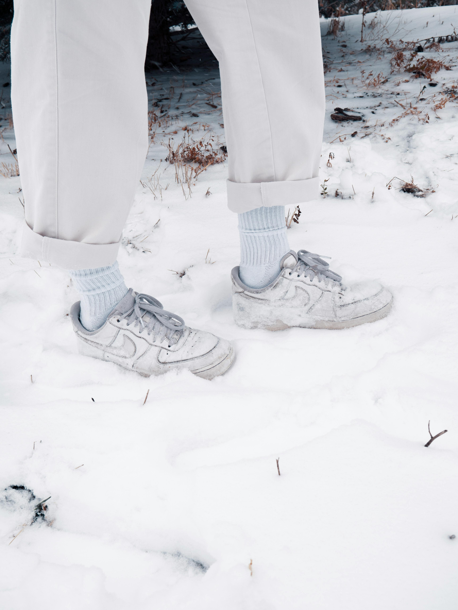
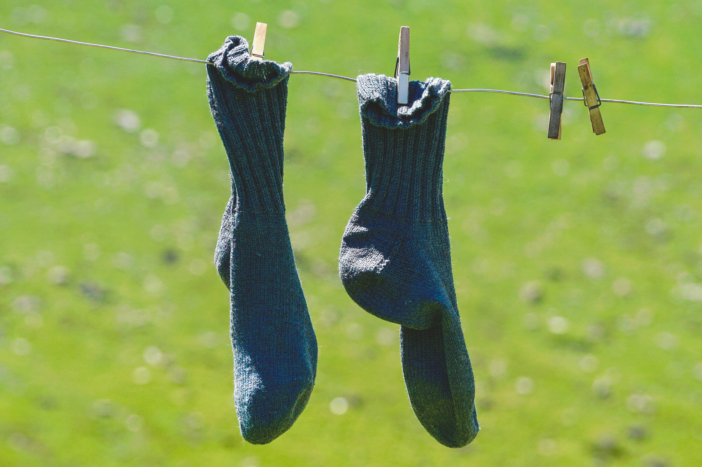

The D-Socks Difference
Featuring advanced odor-neutralizing technology, these socks keep your feet feeling and smelling fresh all day long.

No more annoying seams rubbing against your toes. Just a smooth and luxurious feel with every step.

Whether it's a chilly winter day or a warm summer afternoon, these socks keep your feet comfortable by adjusting to the surrounding temperature.

We believe in sustainable fashion. D-Socks are crafted from eco-friendly materials.